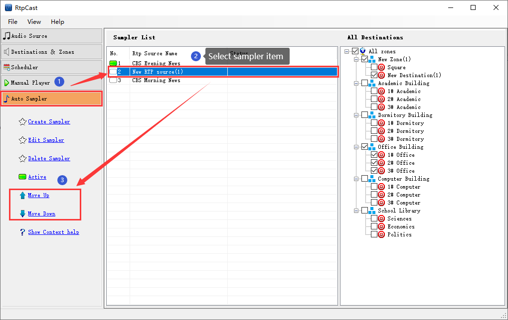

|  |
|
Introduction |
|
[Move Up] or [Move Down], it is convenient for users to manage and maintain the sampler list by category. |
|
Operation |
| Select a sampler from the sampler list, and then click [Move Up] to move up one step, or click [Move Down] to move down one step. |